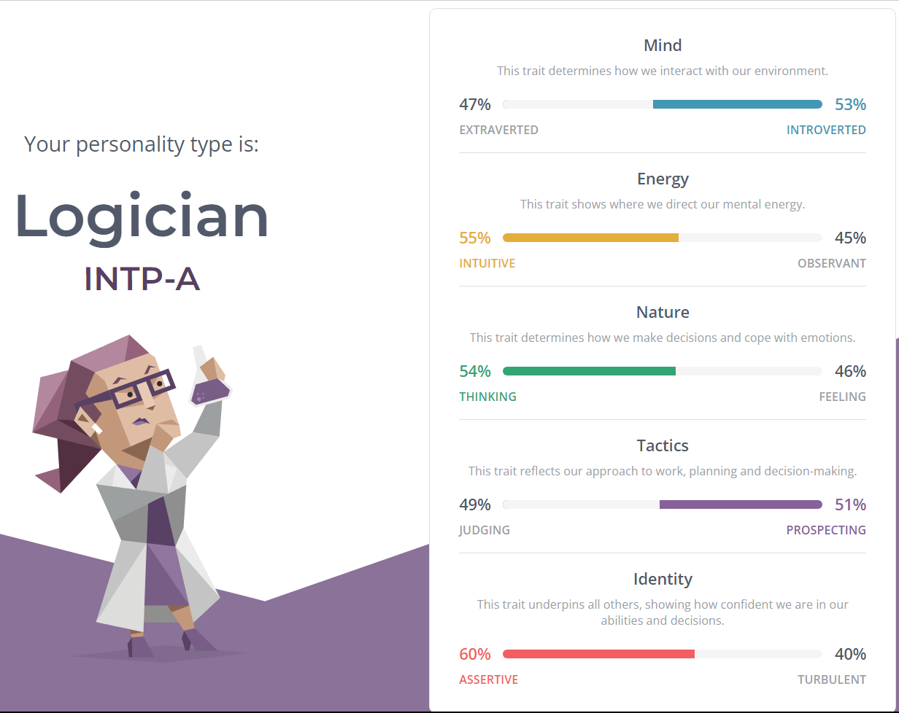

Personal profile
Online Myers-Brigg’s test:

Learning style test:

Leadership test:

What the tests says about me:
The test results indicate that I am introverted, which is dependent as I normally require human interaction to function, as we know how humans are social creatures. But I do enjoy some time to myself occasionally, to relax and de-stress, even so, I wouldn’t say I am introverted. It also indicates that I often focus on the bigger picture in my imagination and not as practical, this may be true as I often try to think outside the box, trying to be creative and find a different interpretation of matters, for me, it is usually the best way to solve a complex problem. I also often prioritize logic over my and others’ emotions, focusing on efficiency if I must choose it over teamwork. I think the reflector style suits me, as I like to observe others before doing my own project, but also coming up with my own ideas to solve a problem so it balances out. I would say that I am quite imaginative and open-minded, which helps me take in others’ opinions as a leader or even let others take control of a project if I think they have a better idea.
How i think these results may affect my performance in a team:
These results indicate that in a team, I might prioritize myself and efficiency overworking in cooperation with others, but I also enjoy working with other people as it helps me gain other ideas to improve on. The tests should be taken with a grain of salt, so my behavior in a team is determined by myself, and it would be cooperating with others to achieve the best possible outcome. In a team, I expect everyone to contribute equally and do something that they are best at, which will increase the efficiency of the project.
How should i take these into account when forming a team:
However, when taking these into account when forming a team, I’d like to find others who are different from me in terms of learning style and personality, so see their point of view on projects and their solution development, so that I can compare it to mine and evaluate and make the best out of our ideas, working together.